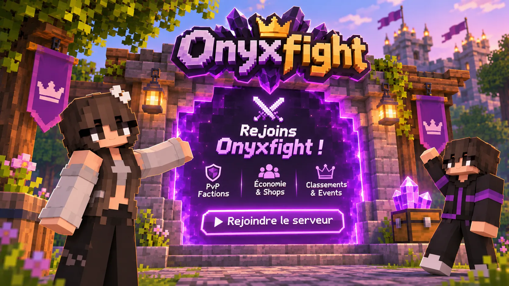

Jouer
Crée ton compte, télécharge le launcher, il s'occupe de tout le reste (Java, Minecraft, les mods).
Un problème pour te connecter ?
1Le launcher ne se lance pas
Vérifie que ton antivirus ne l'a pas mis en quarantaine, puis relance-le. S'il reste bloqué, supprime le dossier %appdata%\.onyxfight\launcher et relance-le : il se répare tout seul.
2Windows bloque le téléchargement
Windows affiche « Windows a protégé votre ordinateur » pour les programmes récents : clique sur Informations complémentaires puis Exécuter quand même. Le launcher est celui du site officiel.
3Erreur de connexion au serveur
Le serveur se joue uniquement avec le launcher OnyxFight et ton compte du site. Vérifie ton pseudo et ton mot de passe dans le launcher, puis réessaie. Si le serveur redémarre, attends une minute.
4Le jeu plante ou lag
Dans les Réglages du launcher, donne 4 Go de mémoire au jeu (pas plus de la moitié de celle de ton ordinateur). Baisse la distance d'affichage et les particules dans les options du jeu.
5J'ai oublié mon mot de passe
Sur la page Mot de passe oublié, avec ton e-mail et la réponse à ta question secrète.
Toujours bloqué ?
L'équipe et la communauté sont sur Discord pour t'aider en quelques minutes.